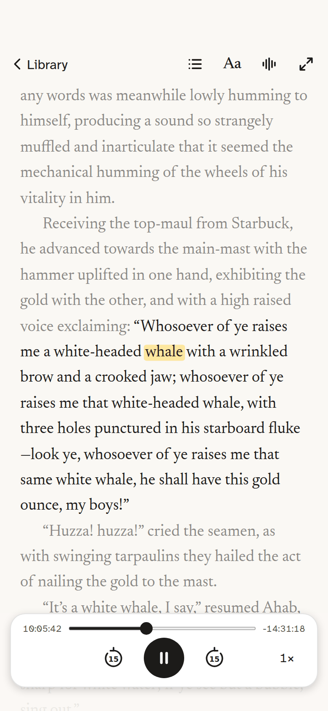
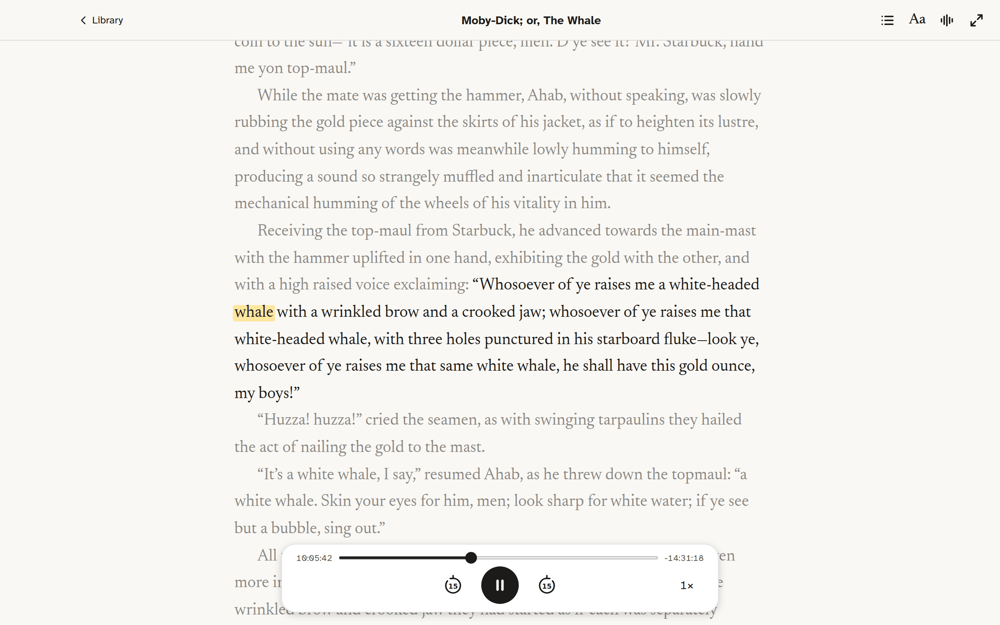
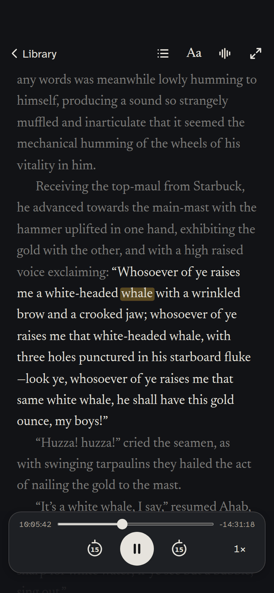
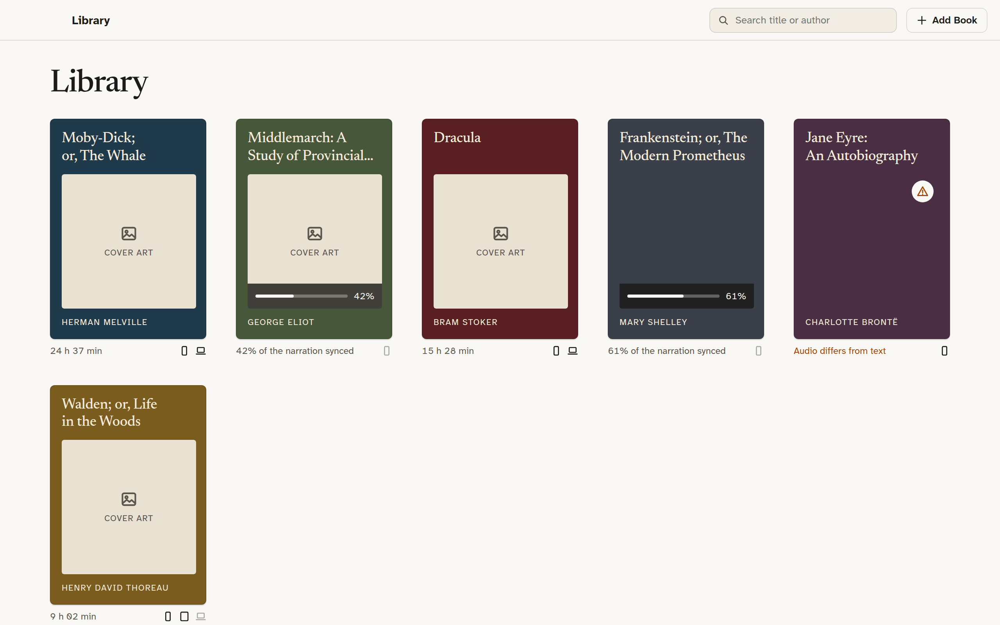

Read a book and listen to it at the same time.
Entzun takes an ebook and the audiobook of the same work, works out on your device when every word is spoken, and marks each one as the narrator reads it. Tap a word to hear it from there. Switch the narration off to read in silence, and on again to pick up exactly where your eyes are.

Two files in, one book out.
Add both files
Pick the ebook, as EPUB or plain text, and the audiobook, as m4b, mp3 or m4a. Entzun copies them into its own library and offers to delete the originals if you want the space back.
It syncs on your device
The narration is transcribed with the speech recogniser built into iOS and macOS, then lined up with the text word by word. Syncing a long book takes minutes, and you can start reading the chapters that are done while the rest catches up.
Read and listen
Open the book and the narration starts where you left off. The word being spoken is marked, the sentence being read stays around the middle of the page, and everything else steps back.
The page is the whole point.
Nothing sits over the sentence being read. Panels push the page down, the player floats well below the reading line, and the controls can be hidden until it is just the book.


Built for people who read with their ears too.
Tap a word, hear it
Any word on the page is a place in the recording. Tap it and the narration jumps there; scroll away and a pill offers to return to where the narrator is.
Silence when you want it
Pause the narration and keep reading as you would any ebook. Start it again and it resumes from the sentence you are on, not from where it stopped.
Set the page your way
Five typefaces, five palettes, and every spacing on the page under your control. The spoken word is marked with a highlight or an underline, whichever you read better. More on accessibility below.
One sentence at a time
Single sentence mode shows only what is being read right now, for when a full page is more than you want in front of you. Chapters keep their real titles, in book order.
iPhone and Mac
Built natively for each, in SwiftUI, with the same library and the same reader. Signed in to iCloud, a book added on one is on the other, synced, at the same page. How that works.
Playback that fits the book
Skip back and forward fifteen seconds, choose a speed from 1× up to 1.7×, and see the time played and the time left for the whole recording.
Reading is not one thing, so the page is not one thing either.
Hearing the words while you see them already helps many people who find a page of text hard going. The rest of the reader is built so that the page itself can get out of the way.
Typefaces chosen for legibility
Five faces, each there for a reason. Newsreader is the book face. Atkinson Hyperlegible Next was designed for low vision, with letters that cannot be mistaken for one another. Lexend was made to reduce visual stress. Luciole was drawn for readers with low vision, and OpenDyslexic weights the bottom of each letter so lines of text stop swimming.
One sentence at a time
Single sentence mode holds only the sentence being narrated in the middle of the page and keeps the rest of the chapter out of sight. There is nothing above or below to wander into, nothing to lose your place in, and the page moves on by itself when the narrator does. For a full page, the sentence being read stays at full strength and the rest steps back.
Every spacing on the page is yours
Text size, or follow the system size. The space between characters, between words, between lines and between paragraphs, each on its own slider.
Natural or justified alignment, and the width of the column. Five palettes: Paper, Sepia, Night, High Contrast, or whatever the system is doing.
The spoken word marked with a highlight or an underline. Try the sliders on this very text.
A shelf that says what is going on.
Every book gets its cover, its colour and one line of truth under it: how long the narration is, how much of it has synced so far, or, when the recording turns out not to follow the text, a plain “Audio differs from text”.

Start on the sofa, carry on at the bus stop.
Add a book on your Mac and it is on your iPhone: the ebook, the audiobook, the word-by-word alignment that took minutes to work out, and the sentence you stopped at. Nothing to set up on the second device, nothing to sync again. Close the book on one and open it on the other, and the narration picks up where you were.
It travels through the private iCloud storage of your own Apple Account, the same place your Notes and Photos live, so it needs a device signed in to iCloud, and space there for your audiobooks. Nobody else, the developer included, can read it.
Read on both without iCloud and each device keeps its own place; when the two disagree, the app asks which to carry on from before showing a page.
Your books never leave your device. Neither does anything about you.
There are no accounts, no analytics, no crash reporter and no third-party code of any kind. Transcription happens on the device, with the speech recogniser Apple ships in the system. Entzun has no server and looks nothing up. The one place your books go is your own iCloud, if you are signed in, so that your other devices can have them; that is storage Apple runs for you, not for us.
That is the whole policy, more or less. The long version is short too.
Read the privacy policyWhat Entzun needs from you
Both files, yours. Entzun does not sell books or fetch them. You bring the ebook and the audiobook, in formats the app can open.
An unabridged recording. It works best with a studio audiobook: one narrator, clean audio, read faithfully from the same text.
A recent system. Word-level timing uses Apple's on-device speech analysis, so it needs iOS 26 or macOS 26.
A little patience the first time. Syncing a long book takes minutes, but you can start reading as soon as the first chapter is synced while the rest catches up. It shows its progress and it only has to happen once.